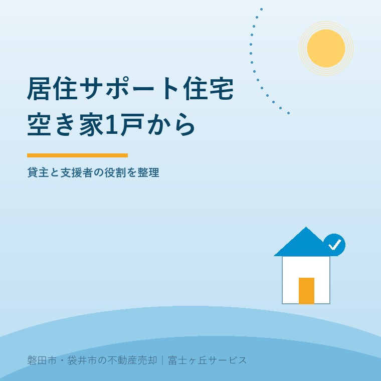
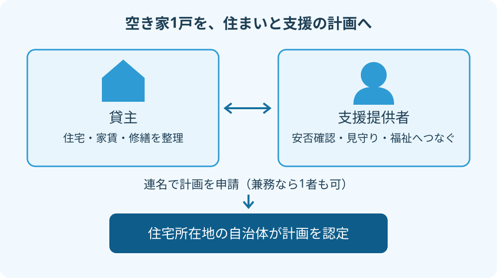

2026年9月10日｜カテゴリ：空き家／賃貸

Q. 親の空いた実家1戸でも、居住サポート住宅として貸せますか。
1戸から申請できます。ただし貸主と支援提供者が連携し、専用住宅、安否確認・見守り、建物や家賃などの認定基準を満たす計画が必要です。修繕費と支援費の負担を先に確認します。磐田市・袋井市・森町では、富士ヶ丘サービスのような「介護×不動産」専門の会社に相談する選択肢もあります。
親が施設に入り、家が空いた。売却にはまだ気持ちが追いつかないが、閉めたままにするのも気になる。居住サポート住宅は、そんな実家を貸す際の検討先になります。家を提供する側と、暮らしを支える側が組む仕組みです。
国土交通省によると、住宅確保要配慮者に対する賃貸住宅の供給の促進に関する法律等の一部を改正する法律は、2025年10月1日に施行されました。この記事は開始から約1年となる2026年9月10日に、認定の条件と家族の段取りを確認したものです。
大石浩之（磐田市／不動産業）です。宅地建物取引士として、私は制度への賛成だけでは貸出しを勧めません。親の家を直すお金と、入居後に動く人が決まって初めて、賃貸の話を具体化できると考えます。
居住サポート住宅は、住まいと必要な支援を組み合わせる賃貸住宅です。認定の対象は建物単体ではなく、居住安定援助賃貸住宅事業に関する計画です。
国土交通省の制度詳細リーフレットは、1戸から申請できると説明しています。アパート1棟を所有していなくても、検討できます。ただし計画には「専用住宅」を1戸以上設ける条件があります。専用住宅は、安否確認・見守り・福祉サービスへのつなぎを全て必要とする要援助者のための住戸です。
空き家が1戸なら、その1戸を専用住宅にする計画から考える。「1戸から可能」の後ろにある条件を落とすと、誰へ貸すのかが変わってしまいます。非専用住宅も組み込めますが、専用住宅を設けず、名前だけ付ける仕組みではありません。
私は、手持ちの1軒から支援者と組める点を評価します。売却か空き家のままかという二択に、暮らしを支える賃貸を加えられるからです。通常の賃貸と保有も含めた比較は、実家を貸す・売る・持つ選択で整理しています。
居住サポート住宅の申請は、賃貸人になる者と支援を提供する者の連名が基本です。貸主が支援も行う場合は、1者で申請することもできます。
静岡県の案内では、支援提供者は居住支援法人に限りません。社会福祉法人、NPO法人、管理会社なども想定されています。ただし、名前を連ねるだけでは入居者を支えられません。提供する内容と実施体制を確認します。

| 担当 | 貸す前に決めること |
|---|---|
| 貸主側 | 貸せる権限、建物の状態、家賃、修繕の手配と費用 |
| 支援提供者側 | 安否確認、見守り、必要な福祉サービスへの接続 |
| 両者で調整 | 連絡先、異常時の対応、支援の対価と負担者、計画の申請 |
この表は、法令上の全業務を列挙したものではなく、私が契約前に整理する項目です。給湯器の故障を誰へ知らせるかと、本人の応答がないとき誰が動くかは別の話です。管理会社へ頼んだ範囲と、居住支援の範囲を混同しないようにします。
注文したいのは「見守り付きなら安心」という説明の中身です。見守りの名称だけでは、夜間の駆け付けや介護サービスの提供まで約束したことになりません。対応時間、鍵の扱い、緊急時の連絡順を、借主も理解できる書面に落とすべきだと私は考えます。
居住サポート住宅の認定には、支援の頻度だけでなく、住宅の規模や設備、耐震性、家賃などの基準があります。国土交通省のリーフレット3頁が主な条件を示しています。
| 確認項目 | 主な基準 |
|---|---|
| 要援助者への支援 | 1日1回以上の安否確認、月1回以上の見守り、福祉サービスへのつなぎ |
| 既存住宅 | 床面積18㎡以上、耐震性、台所・便所・浴室等の設備 |
| 家賃・支援の対価 | 近傍同種の賃貸住宅と均衡を失しない家賃、不当に高額でない支援の対価 |
安否確認は、常時作動し24時間以内に異常の有無を検知する通信機器、電話、訪問などが想定されています。月1回以上の見守りと、日々の安否確認は別の項目です。「毎月電話を入れるから足りる」とは読めません。
18㎡を超える実家でも、それだけで合格とは言えません。台所や浴室が残っていることと、安全に使えることも別です。古い住宅は、耐震性をどの資料で示すかを窓口へ確認し、必要に応じて建築士へ相談します。状態の整理には空き家の建物状況調査も役立ちますが、調査と認定を同じものとして扱わないでください。
居住サポート住宅として空き家を貸す判断では、家賃収入と、住宅にかかる費用、支援にかかる費用を分けます。認定を受けること自体は、収益や満室を保証するものではありません。
制度が立派でも、誰がいくら払い、誰が動くかが空欄なら、私は貸出しを勧めません。まず修繕の見積り、支援の見積り、家賃の見込みを同じ紙に置きます。支援費を貸主が負担するのか、借主が負担するのか、別の支援を利用できるのかで、家族の収支も変わります。
国土交通省は改修や家賃等に関する支援制度を紹介しています。ただし自治体を通じた補助は、その自治体に制度がある場合に利用できるものです。認定されたから補助金が必ず出る、と収支を組まないようにします。
私は、家を残せる点には魅力を感じます。一方で、親の施設費を家賃で補いたい家族へ、修繕後の手残りを示せない段階で勧めてよいかは迷います。ここは思い入れだけでは決められません。空室中の負担、次の設備交換、支援費の見直しまで入れて比較したいところです。
入居後の残置物や死亡時の契約処理も、認定だけで解決する話ではありません。残置物モデル契約条項の3確認を参考に、借主の意思と受任者の適否を別途整理します。契約や相続の個別判断は専門家に確認を。
静岡県の2026年9月2日更新の案内では、磐田市の認定窓口は建築住宅課、電話0538-37-4851です。袋井市は建築住宅課施設営繕係、電話0538-44-3120と案内されています。
県の案内では、市の住宅は各市が、町の住宅は県が認定を担当します。森町の実家なら県の住まいづくり課が確認先です。住んでいる家族の住所ではなく、貸す住宅の所在地で分けます。
私は、初回の相談用に住所、間取り、築年が分かる資料、現在の状態を示す写真を用意する方法を勧めます。これは提出書類の確定一覧ではありません。「この家で誰と計画を作れるか」「耐震性を何で確認するか」「利用できる補助があるか」を聞くための材料です。
富士ヶ丘サービスは、磐田市・袋井市を中心に、介護と不動産を一体で考える相談を受けています。家族が困らない売却を支える立場から、貸す案も同じ土俵で比べます。当社が個別の居住支援を引き受けると確約する記事ではありません。まず実家カルテで家の条件を整理し、支援者と費用が見えてから進むかを決める。私はこの順番で案内します。
居住サポート住宅を検討する家族向けに、申請単位、支援方法、費用を確認します。
1戸から申請できます。ただし計画内に専用住宅を1戸以上設ける必要があるため、1戸だけの計画なら、その住戸を専用住宅として扱います。専用住宅は安否確認・見守り・福祉サービスへのつなぎを全て必要とする方が対象です。建物と支援体制も含め、所在地の認定窓口へ確認します。
貸主本人の毎日の訪問が一律に必要な制度ではありません。要援助者への安否確認は1日1回以上、見守りは月1回以上が基準です。安否確認には通信機器や電話なども想定されています。連携する支援提供者と方法を決め、異常時の連絡先や対応範囲も計画と契約で確かめます。
認定だけで無料になるわけではありません。改修などに使える支援制度はありますが、地方自治体を通じた補助は自治体に制度がある場合に限られます。対象工事、申請時期、入居者の条件なども別途確認が必要です。補助を見込まない費用表も作り、家賃と支援の対価を分けて判断します。

この記事を書いた人：大石浩之（宅地建物取引士）
磐田市で不動産業と介護事業を営み、施設入居後の実家について、売却だけでなく戸建て賃貸と保有も比べます。借主とご家族の双方が困らないよう、名義、家財、契約、管理の順番を整理します。プロフィール
ふじがおか実家カルテ｜売却を決める前でも作成料0円
貸せる家か、家財と名義から整理します。
親の施設入居後に空いた家を、売る・貸す・持つで比較します。賃貸借と死後事務の個別契約は、弁護士などの専門家へ確認できる形につなぎます。
制度と窓口は2026年9月10日に次の一次情報で確認しました。
2026年9月10日時点の一般的な説明です。制度・数値・窓口は変わる場合があります。認定可否、支援内容、補助は所在地の窓口と支援提供者へ、税務・登記・相続・契約の個別判断は税理士・司法書士・弁護士などの専門家に確認を。
富士ヶ丘サービス株式会社／静岡県磐田市見付5789番地1／TEL:0538-31-3308／静岡県知事 (2) 第14083号／代表取締役・宅地建物取引士 大石 浩之